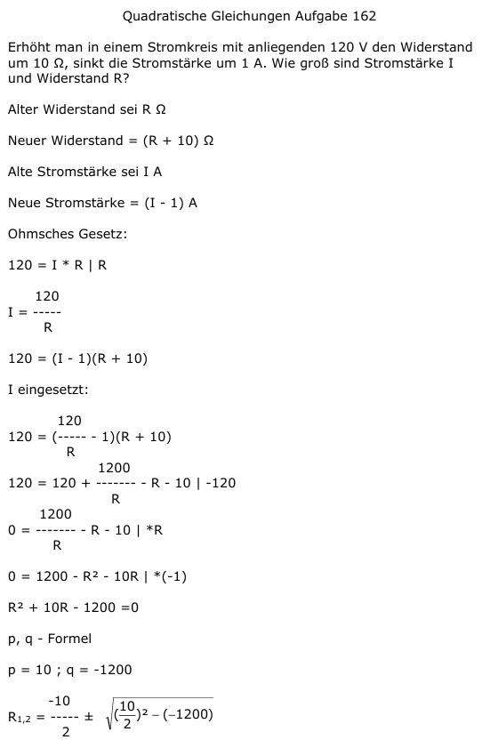

Aufgabe 162 Erhöht man in einem Stromkreis mit anliegenden 120 V den Widerstand um 10 Ω, sinkt die Strom- stärke um 1 A. Wie groß sind Stromstärke I und Widerstand R? Alter Widerstand sei R Ω Neuer Widerstand = (R + 10) Ω Alte Stromstärke sei I A Neue Stromstärke = (I - 1) A Ohmsches Gesetz: 120 = I * R | R 120 I = ----- R 120 = (I - 1)(R + 10) I eingesetzt: 120 120 = (----- - 1)(R + 10) R 1200 120 = 120 + ------- - R - 10 |-120 R 1200 0 = ------- - R - 10 |*R R 0 = 1200 - R² - 10R |*(-1) R² + 10R - 1200 = 0 p, q - Formel p = 10 ; q = -1200  R1,2 = -5 ± 35 R1 = -5 + 35 = 30 Ω 120 V I = ------- = 4 A 30 Ω R2 = -5 - 35 = -40 Ω keine Lösung, negativer Widerstand